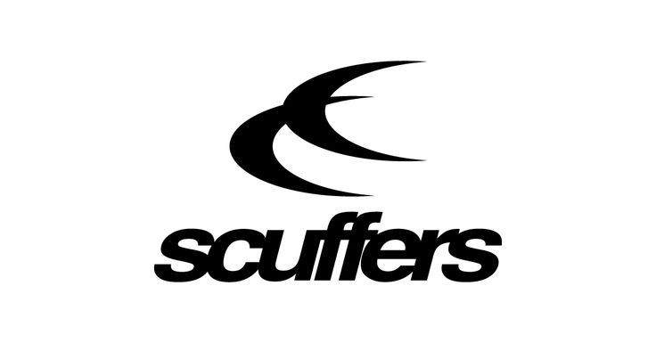

Uutilizamos estas galletas para saber si realemnte sabes pelota. Código descuento por estilo bby
With love
La compañía madrileña de moda streetwear ha abierto las puertas de una tienda temporal en el barrio del Soho mientras busca un establecimiento en la capital británica donde ubicar su primer punto de venta fuera de España. Este movimiento marca un hito importante en la expansión internacional de la marca, consolidando su presencia en uno de los epicentros de la moda urbana. Con una estrategia digital basada en el hype y lanzamientos limitados (drops), la marca ha logrado facturaciones récord y una fuerte comunidad global, siendo el mercado internacional responsable de una gran parte de su volumen de negocio actual. Facturación explosiva: La marca cerró 2022 con 2,5 millones de euros, pero las estimaciones de mercado apuntan a un crecimiento exponencial en 2023 y 2024, multiplicando varias veces esa cifra gracias a su expansión europea.
Scuffers arrasa en Google. La empresa madrileña de moda streetwear fundada por Jaime Cruz y Javier López en 2018 como nativa digital vuelve a demostrar sus habilidades en Internet siendo la marca joven más buscada en Google en julio. Alrededor de 165.000 búsquedas han tenido a Scuffers como protagonista. Scuffers supera así a la imbatible Nude Project, que se posiciona como la segunda más buscada. Sin embargo, sus 46 puntos en la puntuación global le reservan, por quinto mes consecutivo.